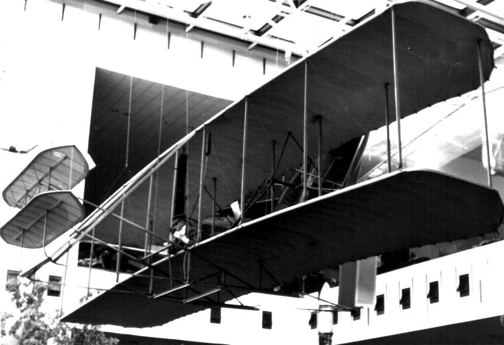
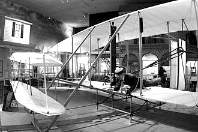

The Wright Flyer (often retrospectively referred to as Flyer I or 1903 Flyer) was the first successful heavier-than-air powered aircraft, designed and built by the Wright brothers. They flew it four times on December 17, 1903, near Kill Devil Hills, about four miles south of Kitty Hawk, North Carolina, U.S. Today, the airplane is exhibited in the National Air and Space Museum in Washington D.C. The U.S. Smithsonian Institution describes the aircraft as "...the first powered, heavier-than-air machine to achieve controlled, sustained flight with a pilot aboard." The Fédération Aéronautique Internationale described the 1903 flight during the 100th anniversary in 2003 as "the first sustained and controlled heavier-than-air powered flight."
Design and construction
Flight trials at Kitty Hawk
The influence of the Flyer
The Flyer after Kitty Hawk
Debate with the Smithsonian
In the Smithsonian
1985 restoration
Flyer reproductions
Specifications (Wright Flyer)
The Flyer was based on the Wrights' experience testing gliders at Kitty Hawk between 1900 and 1902. Their last glider, the 1902 Glider, led directly to the design of the Flyer. The Wrights built the aircraft in 1903 using 'giant spruce' wood as their construction material. The wings were designed with a 1-in-20 camber. Since they could not find a suitable automobile engine for the task, they commissioned their employee Charlie Taylor to build a new design from scratch. A sprocket chain drive, borrowing from bicycle technology, powered the twin propellers, which were also made by hand. The Flyer was a canard biplane configuration. As with the gliders, the pilot flew lying on his stomach on the lower wing with his head toward the front of the craft in an effort to reduce drag. He steered by moving a cradle attached to his hips. The cradle pulled wires which warped the wings and turned the rudder simultaneously. The Flyer's "runway" was a track of 2x4s stood on their narrow edge, which the brothers nicknamed the "Junction Railroad". The Flyer was conceived as a control-canard, as the Wrights were more concerned with control than stability. However it was found to be so highly unstable it was barely controllable. Following the first flight, ballast was added to the nose to move the center of gravity forward and reduce pitch instability. However the basics of pitch stability of the canard configuration were not understood by the Wright Brothers. F.E.C. Culick stated, "The backward state of the general theory and understanding of flight mechanics hindered them... Indeed, the most serious gap in their knowledge was probably the basic reason for their unwitting mistake in selecting their canard configuration".

Upon returning to Kitty Hawk in 1903, the Wrights completed assembly of the Flyer while practicing on the 1902 Glider from the previous season. On December 14, 1903, they felt ready for their first attempt at powered flight. With the help of men from the nearby government life-saving station, the Wrights moved the Flyer and its launching rail to the incline of a nearby sand dune, Big Kill Devil Hill, intending to make a gravity-assisted takeoff. The brothers tossed a coin to decide who would get the first chance at piloting, and Wilbur won. The airplane left the rail, but Wilbur pulled up too sharply, stalled, and came down in about three seconds with minor damage. Repairs after the abortive first flight took three days. When they were ready again on December 17, the wind was averaging more than 20 mph, so the brothers laid the launching rail on level ground, pointed into the wind, near their camp. This time the wind, instead of an inclined launch, helped provide the necessary airspeed for takeoff. Because Wilbur already had the first chance, Orville took his turn at the controls. His first flight lasted 12 seconds for a total distance of 120 ft (36.5 m) – shorter than the wingspan of a Boeing 747, as noted by observers in the 2003 commemoration of the first flight. Taking turns, the Wrights made four brief, low-altitude flights that day. The flight paths were all essentially straight; turns were not attempted. Each flight ended in a bumpy and unintended "landing". The last flight, by Wilbur, was 852 feet (260 m) in 59 seconds, much longer than each of the three previous flights of 120, 175 and 200 feet. The landing broke the front elevator supports, which the Wrights hoped to repair for a possible four-mile (6 km) flight to Kitty Hawk village. Soon after, a heavy gust picked up the Flyer and tumbled it end over end, damaging it beyond any hope of quick repair. It was never flown again.In 1904, the Wrights continued refining their designs and piloting techniques in order to obtain fully controlled flight. Major progress toward this goal was achieved with a new Flyer in 1904 and even more decisively in 1905 with a third Flyer, in which Wilbur made a 39-minute, 24-mile (39 km) nonstop circling flight on October 5. While the 1903 Flyer was clearly a historically important test vehicle, its hallowed status in the American imagination has obscured the role of its two successors in the continuing development that led to the Wrights' mastery of controlled powered flight in 1905.
“The last flight, by Wilbur, was 852 feet (260 m) in 59 seconds, much longer than each of the three previous flights of 120, 175 and 200 feet.”

The Flyer series of aircraft were the first to achieve controlled heavier-than-air flight, but some of the mechanical techniques the Wrights used to accomplish this were not influential for the development of aviation as a whole, although their theoretical achievements were. The Flyer design depended on wing-warping and a foreplane or "canard" for pitch control, features which would not scale and produced a hard-to-control aircraft. However, the Wrights' pioneering use of "roll control" by twisting the wings to change wingtip angle in relation to the airstream led directly to the more practical use of ailerons by their imitators, such as Curtiss and Farman. The Wrights' original concept of simultaneous coordinated roll and yaw control (rear rudder deflection), which they discovered in 1902, perfected in 1903–1905, and patented in 1906, represents the solution to controlled flight and is used today on virtually every fixed-wing aircraft. The Wright patent included the use of hinged rather than warped surfaces for the forward elevator and rear rudder. Other features that made the Flyer a success were highly efficient wings and propellers, which resulted from the Wrights' exacting wind tunnel tests and made the most of the marginal power delivered by their early "homebuilt" engines; slow flying speeds (and hence survivable accidents); and an incremental test/development approach. The future of aircraft design, however, lay with rigid wings, ailerons and rear control surfaces. After a single statement to the press in January 1904 and a failed public demonstration in May, the Wright Brothers did not publicize their efforts, and other aviators who were working on the problem of flight (notably Alberto Santos-Dumont) were thought by the press to have preceded them by many years. Indeed, several short heavier-than-air powered flights had been made by other aviators before 1903, leading to controversy about precedence (see Early flying machines). The Wrights, however, claimed to be the first of these which was “properly controlled”. The issue of control was correctly seen as critical by the Wrights, and they acquired a wide American patent intended to give them ownership of basic aerodynamic control. This was fought in both American and European courts. European designers, however, were little affected by the litigation and continued their own development. The legal fight in the U.S., however, had a crushing effect on the nascent American aircraft industry, and by the time of World War I, the U.S. had no suitable military aircraft and had to purchase French and British models.

Upon returning to Kitty Hawk in 1903, the Wrights completed assembly of the Flyer while practicing on the 1902 Glider from the previous season. On December 14, 1903, they felt ready for their first attempt at powered flight. With the help of men from the nearby government life-saving station, the Wrights moved the Flyer and its launching rail to the incline of a nearby sand dune, Big Kill Devil Hill, intending to make a gravity-assisted takeoff. The brothers tossed a coin to decide who would get the first chance at piloting, and Wilbur won. The airplane left the rail, but Wilbur pulled up too sharply, stalled, and came down in about three seconds with minor damage. Repairs after the abortive first flight took three days. When they were ready again on December 17, the wind was averaging more than 20 mph, so the brothers laid the launching rail on level ground, pointed into the wind, near their camp. This time the wind, instead of an inclined launch, helped provide the necessary airspeed for takeoff. Because Wilbur already had the first chance, Orville took his turn at the controls. His first flight lasted 12 seconds for a total distance of 120 ft (36.5 m) – shorter than the wingspan of a Boeing 747, as noted by observers in the 2003 commemoration of the first flight. Taking turns, the Wrights made four brief, low-altitude flights that day. The flight paths were all essentially straight; turns were not attempted. Each flight ended in a bumpy and unintended "landing". The last flight, by Wilbur, was 852 feet (260 m) in 59 seconds, much longer than each of the three previous flights of 120, 175 and 200 feet. The landing broke the front elevator supports, which the Wrights hoped to repair for a possible four-mile (6 km) flight to Kitty Hawk village. Soon after, a heavy gust picked up the Flyer and tumbled it end over end, damaging it beyond any hope of quick repair. It was never flown again.In 1904, the Wrights continued refining their designs and piloting techniques in order to obtain fully controlled flight. Major progress toward this goal was achieved with a new Flyer in 1904 and even more decisively in 1905 with a third Flyer, in which Wilbur made a 39-minute, 24-mile (39 km) nonstop circling flight on October 5. While the 1903 Flyer was clearly a historically important test vehicle, its hallowed status in the American imagination has obscured the role of its two successors in the continuing development that led to the Wrights' mastery of controlled powered flight in 1905.
The Flyer series of aircraft were the first to achieve controlled heavier-than-air flight, but some of the mechanical techniques the Wrights used to accomplish this were not influential for the development of aviation as a whole, although their theoretical achievements were. The Flyer design depended on wing-warping and a foreplane or "canard" for pitch control, features which would not scale and produced a hard-to-control aircraft. However, the Wrights' pioneering use of "roll control" by twisting the wings to change wingtip angle in relation to the airstream led directly to the more practical use of ailerons by their imitators, such as Curtiss and Farman. The Wrights' original concept of simultaneous coordinated roll and yaw control (rear rudder deflection), which they discovered in 1902, perfected in 1903–1905, and patented in 1906, represents the solution to controlled flight and is used today on virtually every fixed-wing aircraft. The Wright patent included the use of hinged rather than warped surfaces for the forward elevator and rear rudder. Other features that made the Flyer a success were highly efficient wings and propellers, which resulted from the Wrights' exacting wind tunnel tests and made the most of the marginal power delivered by their early "homebuilt" engines; slow flying speeds (and hence survivable accidents); and an incremental test/development approach. The future of aircraft design, however, lay with rigid wings, ailerons and rear control surfaces.After a single statement to the press in January 1904 and a failed public demonstration in May, the Wright Brothers did not publicize their efforts, and other aviators who were working on the problem of flight (notably Alberto Santos-Dumont) were thought by the press to have preceded them by many years. Indeed, several short heavier-than-air powered flights had been made by other aviators before 1903, leading to controversy about precedence (see Early flying machines). The Wrights, however, claimed to be the first of these which was “properly controlled”. The issue of control was correctly seen as critical by the Wrights, and they acquired a wide American patent intended to give them ownership of basic aerodynamic control. This was fought in both American and European courts. European designers, however, were little affected by the litigation and continued their own development. The legal fight in the U.S., however, had a crushing effect on the nascent American aircraft industry, and by the time of World War I, the U.S. had no suitable military aircraft and had to purchase French and British models.
The Wright Brothers returned home to Dayton for Christmas after the flights of the Flyer. While they had abandoned their other gliders, they realized the historical significance of the Flyer. They crated it and shipped it back to Dayton, where it stayed in storage for 9 years. It was inundated in the Great Dayton Flood in March 1913. Charlie Taylor relates in a 1948 article that the Flyer nearly got disposed of by the Wrights themselves. In early 1912 Roy Knabenshue, The Wrights Exhibition team manager, had a conversation with Wilbur and asked Wilbur what they planned to do with the Flyer. Wilbur said they most likely will burn it, as they had the 1904 machine. According to Charlie, Knabenshue talked Wilbur out of disposing of the machine for historical purposes. In 1910 the Wrights first made attempts to exhibit the Flyer in the Smithsonian Institution but talks fell through with the ensuing lawsuits against Glenn Curtiss and the Flyer may have been needed as repeated evidence in court cases. In 1916 as the patent fights were ending, Orville brought the Flyer out of storage and prepared it for display at the Massachusetts Institute of Technology. (Wilbur had died in 1912.) He replaced parts of the wing covering, the props, and the engine's crankcase, crankshaft, and flywheel. The crankcase, crankshaft and flywheel of the original engine had been sent to the Aero Club of America in New York for an exhibit in 1906 and were never returned to the Wrights. The replacement crankcase, crankshaft and flywheel came from the guinea pig engine Charlie Taylor had built in 1904 and used for testing in the bicycle shop. A replica crankcase of the flyer is on display at the visitor center at the Wright Brothers National Memorial to this day.
The Smithsonian Institution, and primarily its then-secretary Charles Walcott, refused to give credit to the Wright Brothers for the first powered, controlled flight of an aircraft. Instead, they honored the former Smithsonian Secretary Samuel Pierpont Langley, whose 1903 tests of his own Aerodrome on the Potomac were not successful. Walcott was a friend of Langley and wanted to see Langley's place in aviation history restored. In 1914, Glenn Curtiss flew a heavily modified Aerodrome from Keuka Lake, N.Y., providing the Smithsonian a basis for its claim that the aircraft was the first powered, heavier than air flying machine "capable" of manned flight. Due to the legal patent battles then taking place, recognition of the 'first' aircraft became a political as well as an academic issue. In 1925, Orville attempted to persuade the Smithsonian to recognize his and Wilbur's accomplishment by offering to send the Flyer to the Science Museum in London. This action did not have its intended effect, and the Flyer went on display in the London museum in 1928. It remained there in "the place of honour", except during World War II when it was moved to an underground vault 100 miles (160 km) from London where Britain's other treasures were kept safe from the conflict. In 1942 the Smithsonian Institution, under a new secretary, Charles Abbot (Walcott had died in 1927), published a list of the Curtiss modifications to the Aerodrome and a retraction of its long-held claims for the craft. The next year, Orville, after exchanging several letters with Abbott, agreed to return the Flyer to the United States. The Flyer stayed at the Science Museum until a replica could be built, based on the original. This change of heart by the Smithsonian is also mired in controversy – the Flyer was sold to the Smithsonian under several contractual conditions, one of which reads:"Neither the Smithsonian Institution or its successors, nor any museum or other agency, bureau or facilities administered for the United States of America by the Smithsonian Institution or its successors shall publish or permit to be displayed a statement or label in connection with or in respect of any aircraft model or design of earlier date than the Wright Aeroplane of 1903, claiming in effect that such aircraft was capable of carrying a man under its own power in controlled flight." Researchers[who?] who promote the accomplishments of pioneer aviator Gustave Whitehead have commented that this agreement renders the Smithsonian unable to make properly unbiased academic decisions concerning any prior claims of 'first flight'. In 1948 the official handover of the Flyer was made to the American Civil Air Attache at a ceremony attended by representatives of the various flying organizations in the UK and by some British aviation pioneers such as Sir Alliott Verdon-Roe.[16] In 1948, the Flyer was returned to the United States on board the Mauretania. When the liner docked at Halifax, Nova Scotia, Paul E. Garber of the Smithsonian’s National Air Museum met the aircraft and took command of the proceedings. The rest of the journey to Washington continued on flatbed truck. While in Halifax Garber met John A. D. McCurdy, at the time the Lieutenant Governor of Nova Scotia. McCurdy as a young man had been a member of Alexander Graham Bell’s team Aerial Experiment Association, which included Glenn Curtiss, and later a famous pioneer pilot. During the stay at Halifax, Garber and McCurdy reminisced about the pioneer aviation days and the Wright Brothers. McCurdy also offered Garber any assistance he needed to get the Flyer home.
The Flyer I as it appeared in 1982 The Flyer was put on display in the Arts and Industries Building of the Smithsonian on December 17, 1948, 45 years to the day after the aircraft's only flights. (Orville did not live to see this, as he died in January of that year.) In 1976, it was moved to the Milestones of Flight Gallery of the new National Air and Space Museum. Since 2003 it has resided in a special exhibit in the museum titled "The Wright Brothers and the Invention of the Aerial Age", honoring the Wright Brothers in recognition of the 100th anniversary of their first flight. A piece of fabric and wood from the Wright Flyer was taken to the surface of the Moon by the crew of Apollo 11, the first lunar landing mission, in July 1969.

In 1981, discussion began on the need to restore the Flyer from the aging it sustained after many decades on display. During the ceremonies celebrating the 78th anniversary of the first flights, Mrs. Harold S. Miller (Ivonette Wright, Lorin's daughter), one of the Wright brothers' nieces, presented the Museum with the original covering of one wing of the Flyer, which she had received in her inheritance from Orville. She expressed her wish to see the aircraft restored. The fabric covering on the aircraft at the time, which came from the 1927 restoration, was discolored and marked with water spots. Metal fasteners holding the wing uprights together had begun to corrode, marking the nearby fabric. Wright Flyer I in the Smithsonian exhibit "The Wright Brothers and the Invention of the Aerial Age" - November 2014 Work began in 1985. The restoration was supervised by Senior Curator Robert Mikesh and assisted by Wright Brothers expert Tom Crouch. Museum director Walter J. Boyne decided to perform the restoration in full view of the public. The wooden framework was cleaned, and corrosion on metal parts removed. The covering was the only part of the aircraft replaced. The new covering was more accurate to the original than that of the 1927 restoration. To preserve the original paint on the engine, the restorers coated it in inert wax before putting on a new coat of paint. The effects of the 1985 restoration were intended to last 75 years (to 2060) before another restoration would be required.
A number of individuals and groups have attempted to build reproductions of the Wright Flyer for demonstration or scientific purposes. In 1978, 23-year-old Ken Kellett built a replica Flyer in Colorado and flew it at Kitty Hawk on the 75th and 80th anniversaries of the first flight there. Construction took a year and cost $3,000.[citation needed As the 100th anniversary on December 17, 2003 approached, the U.S. Centennial of Flight Commission along with other organizations opened bids for companies to recreate the original flight. The Wright Experience, led by Ken Hyde, won the bid and painstakingly recreated reproductions of the original Flyer, plus many of the prototype The completed Flyer reproduction was brought to Kitty Hawk and pilot Kevin Kochersberger attempted to recreate the original flight at 10:35 AM December 17, 2003 on level ground near the bottom of Kill Devil Hill.Although the aircraft had previously made several successful test flights, sour weather, rain, and weak winds prevented a successful flight on the actual anniversary date. Hyde's reproduction is displayed at the Henry Ford Museum in Dearborn, Michigan. Numerous static display-only, nonflying reproductions are on display around the United States and across the world, making this perhaps the most reproduced single "pioneer" era aircraft in history, rivalling the number of copies - some of which are airworthy - of Louis Blériot's cross-Channel Bleriot XI from 1909.